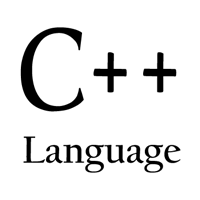

Alexandr Poltavsky
Software developer
Location: Russia, Moscow
Email: poltavsky.alexandr@gmail.com
(also for jobs in Moscow)
Blog
Github
Shadertoy
Twitter



Resume
Contact Details
- Email: poltavsky.alexandr@gmail.com
- Phone: +7 (964) 791-19-61
Summary
I'm looking for a job that is mostly about C++. I have been interested in computers since I was young and over time acquired a good understanding of computer architecture, data structures and algorithms. Also I am experienced with Internet technologies. One of my achievements is a C++ library atomic_data for doing lock-free programming with data structures of any size ( all code, including Android Studio NDK project, is available on GitHub ).
Technical Skills
- Good grasp of C++11/C++14 and Standard Template Library (STL)
- Familiar with DirectX 9, DirectX 11 and OpenGL APIs
- Have experience with HLSL and GLSL
- Studied NVIDIA CUDA architecture and wrote a sample kernel
- Experience with Java and JNI
- Some knowledge of the Web technologies (PHP, JavaScript, HTML, a little of Perl)
- A lot of experience with MySQL, a little with Oracle PL/SQL
- Good understanding of classic multithreaded and lock-free programming
- Able to look into assembly output and optimize programs for speed using SIMD extensions
- Good math skills (linear algebra, differential calculus, trigonometry)
- Worked with SVN and GIT
- Used to Bash and Linux
Work Experience
MAIR Industrial Group, Russia, Moscow, August 2004 - December 2005
Position: Software Engineer
Support of an internal database client application written in C++. Fixed bugs and improved GUI.
RBC Media, Russia, Moscow, December 2005 - June 2008
Position: Software Engineer, later Senior Software Engineer
Development of web applications based on Apache, PHP (and a little of Perl), MySQL stack. Building interfaces in HTML, CSS and JavaScript.
Development of an extension module for Apache to gather stats in the C language.
Lead a small group of developers (3 people).
Human Stem Cells Institute, Russia, Moscow, August 2008 - May 2011
Position: Software Engineer
Worked on an internal project to develop an OpenGL 3D computer program to demonstrate to clients the effects of cosmetic injections. The development was in Visual C++.
Independent software Developer since 2011 up to now
Took a break from active career to try to develop personal projects. Tried to develop a CMS (Content Management System) and launch a news web site, took part-time gigs, later developed a Java app for Google Play Store (Color Throne).
Used that time to boost my C++ skills, got a deep understanding of new features in C++11. Also read a lot about computer graphics algorithms and rendering techniques, wrote a couple programs, came up with a new anti-aliasing algorithm (DFAA). Got a good idea of lock-free programming and came up with a new lock-free data structure atomic_data.
Education
Mathematics and Informatics, Moscow Engineering Physics Institute (MEPhi), incomplete.
Certificates
Zend Certified Engineer (LAMP software stack)
Projects and Publications
Introducing DFAA anti-aliasing algorithm
In this article I present a novel AA technique - DFAA. HLSL code and a Render Monkey project is available on GitHub.
atomic_data: A Multibyte General Purpose Lock-Free Data Structure
Lock-free programming problems are described and a new general-purpose lock-free data structure is presented. A lot of code examples. Also an Android Studio (NDK) project is available.
A quick and easy way to print a float in base-10
Floating point is an important topic in computer programming and in this article some clever way of printing out floating point numbers is presented.
Color Throne - Brain Gymnastics (an android game)
This is a simple game written in Java. Check it out on Google Play.
Language Skills
- Native Russian
- Advanced English
- Beginner German